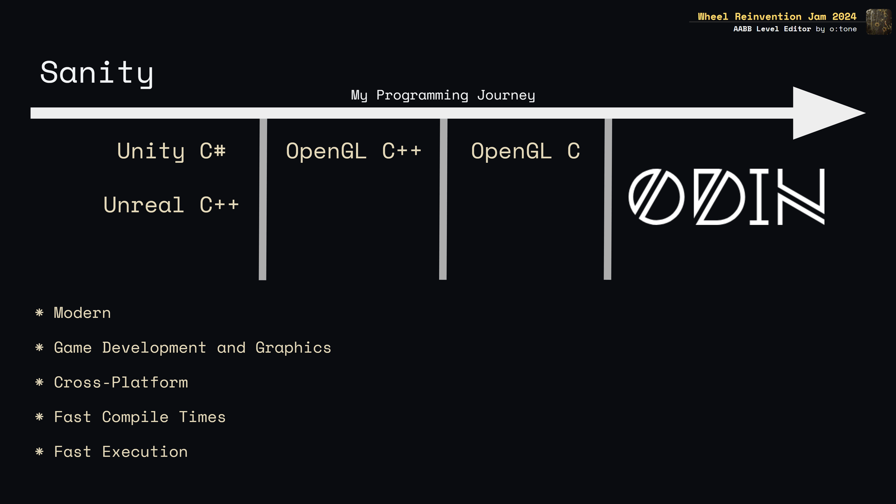

Wheel Reinvention Jam 2024: AABB Level Editor
Project Page @ HN
About

Some of the features that made it into the project during and after the jam:
* Adding AABB Brushes
* Checker Grid Renderer
* Raycasts on AABB Faces
* AABB Brush Face Editing
* Adding Textures via Drag & Drop
* Generating GL Texture Array
* Assigning Textures to Faces
Why Odin?
This slide didnt make it into the already lengthy recap video
I'm a game developer with experience in Unity (C#) and Unreal (C++). After working with these engines for a while, I moved on to building my own custom engines.
Unreal's approach—relying heavily on macros, templates, and custom language features—differs significantly from standard C++. To deepen my understanding, I began working with C++ directly, using OpenGL.
As my projects grew more complex, I found compilation times becoming a major bottleneck (not to mention the overhead of the C++ standard library) and noticed some architectural issues—largely due to my own inexperience. My experience with C++ was mixed: on one hand, development felt direct and efficient; on the other, I grew increasingly frustrated with the syntax complexity and implicit functionality that sometimes led to unexpected behavior.
So, I shifted to C for the next phase, aiming to minimize dependencies (using only GLFW, OpenGL, stb, cgltf, and miniaudio) and even writing my own math functions for OpenGL. After a few months, I found I enjoyed C's simplicity, manual memory management, and faster compile times. However, I did miss some of the safety and modern standards that make certain tasks—like string handling—more efficient.
This led me to consider exploring Odin - a low-level language that offers a more modern alternative to C.